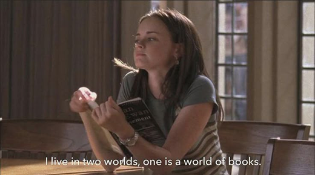

Escola? Faculdade? Você sempre pode estudar como a Rory!
Seja utilizando livros, cadernos, fichas e computadores: Essas dicas de estudo baseadas na rotina de Rory Gilmore vão te fazer alcançar qualquer um dos seus objetivos! Abre seu PC, seu caderno, pega uma caneta, uma bela xícara de café e guarda essas dicas pertinho do coração!
Método S.M.A.R.T - Tenha clareza nos seus objetivos
O S.M.A.R.T te ajuda a definir uma meta específica, mensurável, alcançável, relevante e temporal, atributos fundamentais pra você não se perder no seu objetivo principal. Clicando aqui você pode conhecer um pouco mais sobre a aplicação do smart na sua rotina!

Um bom cronograma de estudos é a chave para o sucesso
Um cronograma ou uma rotina pra te auxiliar no dia-a-dia pode ser justamente o que vai mudar absolutamente tudo pra você. Organizar suas aulas e suas matérias vai tirar aquela sensação de não saber por onde começar. O mais legal é que você pode usar planners, cadernos, agendas e até mesmo aplicativos no computador, como o notion ou o planify (caso você use linux)! Clicando aqui você pode encontrar alguns templates bacanas pra começar a se organizar!
Você é o que você consome
Não adianta você estudar apenas o que passam em sala de aula: Você precisa consumir conteúdos que façam parte do seu dia-a-dia. No meu caso, eu curso ciência da computação, então eu tento ao máximo ouvir podcasts de tecnologia, vídeo sobre novidades no meio, criadoras de conteúdo em redes sociais que trabalham nas mais diversas áreas. Tudo isso influencia sua jornada positivamente e pode te ajudar a evluir cada vez mais, independente da área que você decida seguir!
Leitura do mês

“O sol é para todos”
Harper Lee
Github do projeto